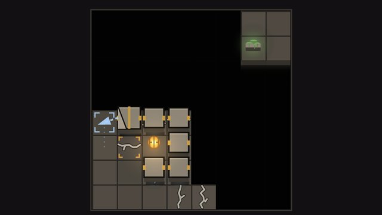
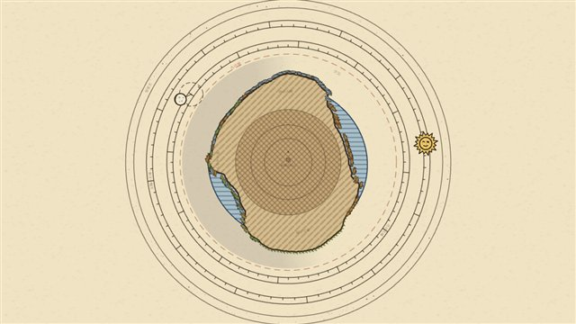
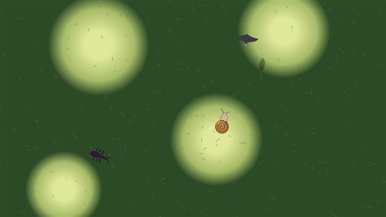
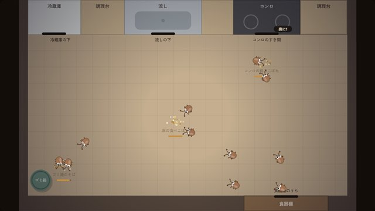

保管庫
ここは、あそびラボの保管庫です。作りかけのゲームや試作を、しまってあります。いちおう遊べますが、中身や見た目は途中のままで、これから直すとは限りません。ふだん遊ぶなら入口のゲームをどうぞ。
試作

試作

試作

試作

退治するほど手ごわくなる
10夜のうちに台所の虫を全滅させろ。はじめは数匹とスリッパだけ。夜ごとにスプレー・毒エサが使えて、虫もとなりから入ってくる。生き残りの子はあなたのやり方に強くなっていく。夜が明けるたびに強化をひとつ。虫の見た目は「まる」も選べる。
ver. 1.0（タイトル・つづきから・効果音・あそびかた。難しさは調整中）
作成 2026-10-08 ・ 更新 2026-10-12過去の版
あそびラボの入口へ
このサイトでは Google アナリティクスで閲覧の記録を集めています（アクセス解析について）